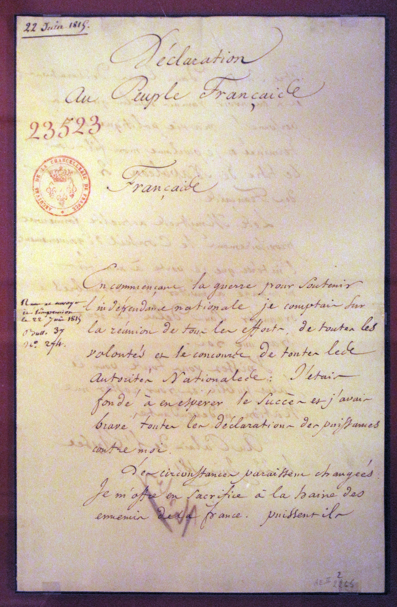
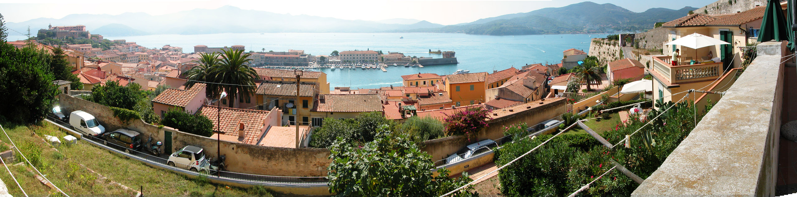
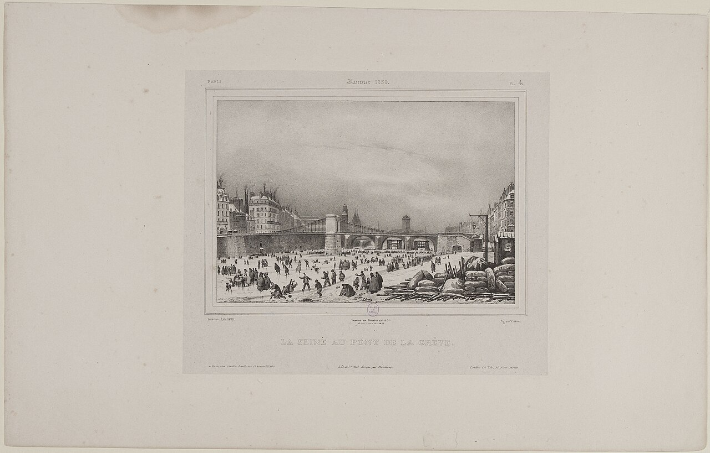

Arquivo 06 · Contexto e documentação
HISTÓRIA × FICÇÃO
Um lugar pode existir sem que os acontecimentos do romance tenham ocorrido nele.
3 categorias disponíveis
HISTÓRIA


- Napoleão Bonaparte
- Imperador francês cuja queda e breve retorno ao poder moldam o cenário político de 1815.
- Ilha de Elba
- Ilha italiana onde Napoleão viveu seu primeiro exílio, entre 1814 e 1815.
- Cem Dias
- Nome dado ao período do retorno de Napoleão ao poder em 1815, antes da segunda restauração monárquica.
- Waterloo
- Batalha de 18 de junho de 1815, decisiva para a derrota final de Napoleão.
- Luís XVIII
- Rei da dinastia Bourbon, restaurado em 1814 e novamente em 1815.
- Restauração Bourbon
- Retorno da monarquia Bourbon após a queda de Napoleão, interrompido pelos Cem Dias.
- Bonapartistas
- Partidários de Napoleão e de sua causa; no romance, a acusação de bonapartismo é usada contra Edmond.
- Château d’If
- Fortaleza e antiga prisão diante de Marselha. O encarceramento de Edmond e Faria pertence à ficção.
- Marselha
- Cidade portuária francesa do Mediterrâneo, escolhida por Dumas como ponto de partida do romance.
- Ilha de Montecristo
- Ilha real do arquipélago toscano. Sua existência não comprova o tesouro dos Spada.
Referências: Fondation Napoléon, Centre des monuments nationaux e Musei dell’Arcipelago Toscano.
FICÇÃO

- Edmond Dantès
- Protagonista inventado por Dumas, não um preso histórico comprovado do Château d’If.
- Mercédès
- Personagem que encarna o amor perdido e as escolhas possíveis depois da ausência.
- Fernand Mondego
- Personagem ficcional ligado à traição contra Edmond.
- Tesouro dos Spada
- Fortuna do enredo que torna possível a transformação material do herói.
- Conde de Monte Cristo
- Identidade assumida por Edmond; não deve ser confundida com uma biografia histórica.
INSPIRAÇÃO

François / Pierre Picaud: um relato, não uma equivalência histórica
O relato conhecido como Le Diamant et la Vengeance, publicado em 1838 nos Mémoires tirés des archives de la police de Paris, atribuídos a Jacques Peuchet, é associado à gênese do romance.
Nele, um homem chamado François ou Pierre Picaud sofre uma denúncia, perde a liberdade e retorna para se vingar. Essa semelhança ajuda a compreender a inspiração literária de Dumas.
A publicação e sua associação ao romance não comprovam todos os acontecimentos narrados. A historicidade da biografia de Picaud é discutida; aqui ela é apresentada como relato de inspiração, sem tratar o personagem como um “Edmond Dantès real”.
Leituras: a origem literária segundo o Château d’If e fontes e ressalvas sobre Picaud.
Linha do tempo histórica
- — Abdicação de Napoleão e exílio em Elba.
- — Napoleão retorna à França.
- — Cem Dias: retorno ao poder, a partir de sua chegada a Paris em 20 de março.
- — Derrota de Napoleão em Waterloo.
- — Luís XVIII retorna a Paris, na segunda Restauração Bourbon.